Inleiding
‘De bank was mijn ledikant, ’t valies mijn hooftkussen’: met die woorden vat de Hollandse koopman Abraham van der Meersch (1643–1728) de ontberingen samen van zijn winterse handelsreis door Denemarken en Zweden in 1674. Zijn verslag is een levendig voorbeeld van de narratieve kracht van het vroegmoderne reisverhaal, en tegelijk een zeldzaamheid: naast dat van Van der Meersch zijn er uit deze periode slechts vier Nederlandse verslagen bekend van een reis naar het hoge noorden.
De reis begint niet met een traditioneel afscheid aan de kade, maar met een paniekerige vlucht uit Amsterdam tijdens het Rampjaar van 1672, wanneer Frankrijk, Engeland en de bisdommen Keulen en Munster de Republiek aanvallen. Als doopsgezind koopman uit de kringen van de collegianten wijkt Abraham uit naar Hamburg en bouwt hij handelscontacten op in Scandinavië. Twee jaar later reist hij het barre noorden in om uitstaande schulden te innen — een tocht die hem zijn overnachting op het eilandje Sprogø doet vergelijken met de overwintering op Nova Zembla.
Hieronder is het volledige reisverhaal ontsloten: 38 handschriftpagina’s met de oorspronkelijke editeursnoten. De tekst is geautomatiseerd uit de bestaande editie overgezet en kan nog kleine oneffenheden bevatten die bij het proeflezen worden gladgestreken.
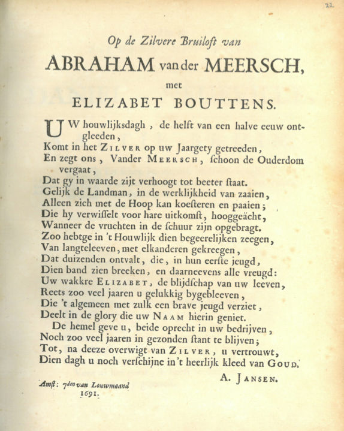
De reis
Abraham van der Meersch vluchtte in juni 1672, bij het uitbreken van het Rampjaar, met zijn goederen van Amsterdam naar Hamburg. Ruim anderhalf jaar later, begin 1674, ondernam hij van daaruit een winterse handelsreis over het ijs door Denemarken en Zuid-Zweden om uitstaande schulden te innen. De kaart toont beide routes met de gedateerde pleisterplaatsen uit het reisverslag; beweeg over een stip voor plaats en datum.
Vlucht naar Hamburg (1672) Noordse reis (1674)
Bezig met laden…
Het register wordt opgebouwd zodra de tekst is geladen.
Verantwoording van de editie
De hier gepresenteerde tekst is een kritische editie van het reisverhaal van Abraham van der Meersch uit 1672–1674, bewaard in de Bijzondere Collecties van de Universiteit van Amsterdam (Ex. W 75). De tekst is vervaardigd in een duidelijk leesbaar handschrift op 38 genummerde pagina’s; het manuscript meet ca. 20 × 24,5 cm. Het ongenummerde titelblad is door een latere hand geschreven. Het addendum op pagina 38 is slecht leesbaar en daarom slechts gedeeltelijk meegenomen.
In 1906 verscheen reeds een Deense editie en vertaling, En reyse i Danmark i vinteren 1674, van de hand van C.S. Petersen. Die editie is echter onvolledig: zij begint bij pagina 6 en eindigt bij pagina 35, en laat de reis door Duitsland en de Republiek achterwege.
Redactionele ingrepen
Omwille van de leesbaarheid zijn enige redactionele ingrepen gedaan:
- Hoofdlettergebruik en woordafbrekingen zijn naar eigen oordeel aangepast, evenals de keuze voor de lettervarianten <i>–<j> en <ij>–<y>.
- Woorden in enkel hoofdletters zijn weergegeven in kapitalen.
- De interpunctie is aangepast wat betreft punten, komma’s, aanhalingstekens en dubbele punten voor fragmenten in de directe rede.
- Koppeltekens (behalve bij woordafbrekingen) en enclitische constructies zijn gelijk gehouden, behalve aan het begin van een zin.
- Abbreviaturen zijn stilzwijgend opgelost, met uitzondering van de hedendaagse tekens voor de ampersand en etcetera. Custodes in de staartwitten zijn eveneens opgelost; bij woordvariatie is de voorkeur gegeven aan het woord op de rectozijde.
- Variaties in schrift en opmaak en interlineaire en marginale toevoegingen zijn aangegeven in een noot.
- Kopjes en inspringingen zijn van de hand van de editeur, maar volgen doorgaans het patroon van Van der Meersch. Paginabreuken zijn in het origineel met vierkante haken aangegeven; hier verschijnen zij als paginamarkering in de marge.
De noten
Geannoteerde woorden zijn subtiel onderstreept in de kleur van hun apparaat; bij hover of klik verschijnt de noot. Woordverklaringen geven korte glossen; Toelichting en commentaar biedt historische context. Onderaan zijn alle noten per apparaat verzameld voor overzicht en citeren.
Manuscript
Het volledige handschrift: 38 pagina’s plus titelblad (Ex. UB Amsterdam, W 75). De paginamarkeringen in de tekst (bijvoorbeeld p. 1) openen de bijbehorende scan; hieronder staan alle pagina’s bij elkaar. Klik op een pagina om die op ware grootte te bekijken.
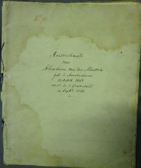
Titelblad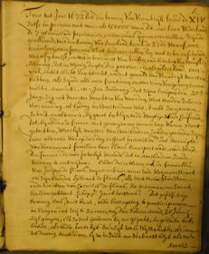
p. 1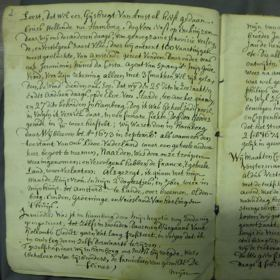
p. 2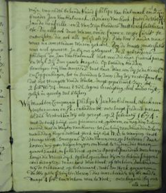
p. 3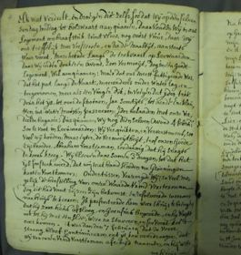
p. 4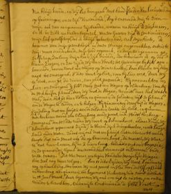
p. 5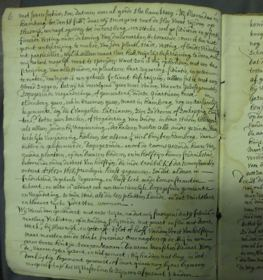
p. 6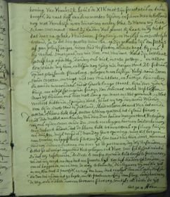
p. 7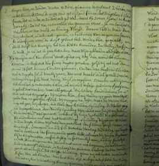
p. 8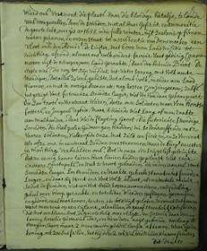
p. 9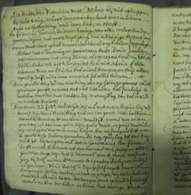
p. 10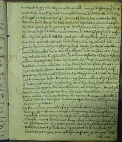
p. 11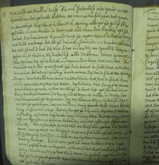
p. 12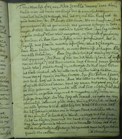
p. 13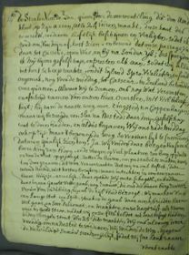
p. 14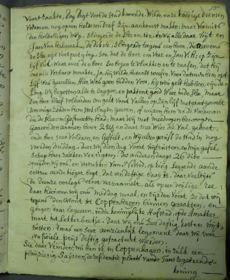
p. 15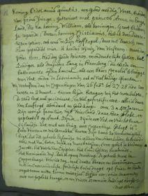
p. 16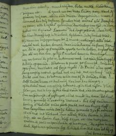
p. 17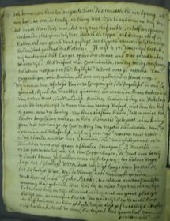
p. 18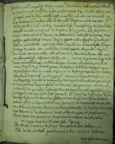
p. 19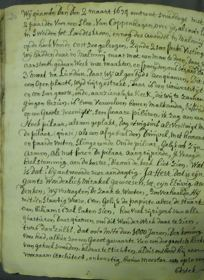
p. 20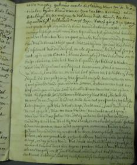
p. 21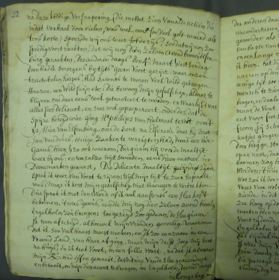
p. 22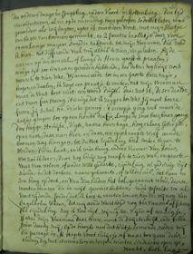
p. 23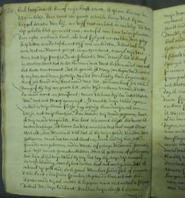
p. 24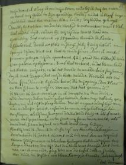
p. 25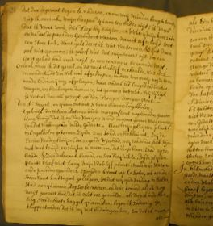
p. 26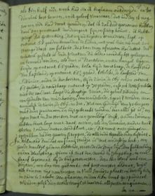
p. 27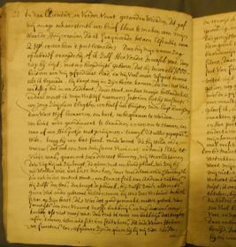
p. 28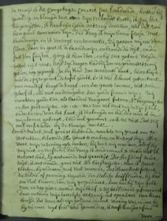
p. 29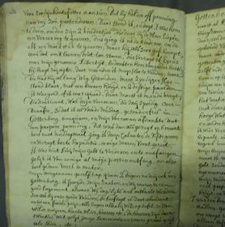
p. 30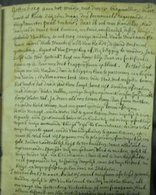
p. 31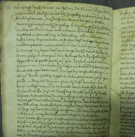
p. 32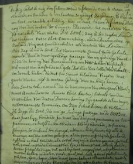
p. 33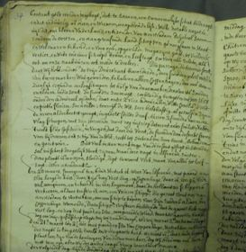
p. 34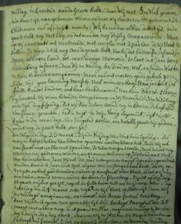
p. 35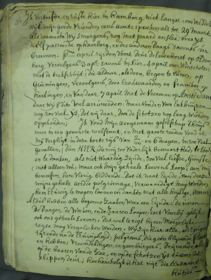
p. 36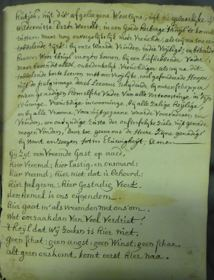
p. 37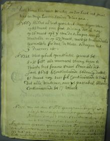
p. 38